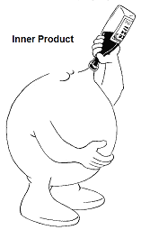

APL – a Glimpse of Heaven
Vector 23:1, page 35
Preamble¶
This document was created for a conference of 22 June 2006, organized by AFAPL, Association Francophone pour la promotion du langage APL: a special conference dedicated to our friend Henri Sinturel, now no longer with us.
This conference was not designed for those proficient in the language: their needs have been met for many years and I have nothing to teach them. I am only attempting to demonstrate this attractive intellectual tool to those who do not know it, in the hope of making one or two converts willing to promote it.
In fact the following presentation is intended, above all, to construct a bridge between two generations:
- The “diplodocus” generation familiar with information technology before the PC and the advent of screens (remember, they were the same ones who knew about punched cards!) and who found in APL a means of handling all the problems which large computers could not handle within a reasonable time. That generation is on the way to extinction.
- The generation who know only about micro-computers, the Internet and hypertext; on which they have been brought up, with substantial help from Excel, ever since their schooldays and who would like to think everything can be done with three clicks of a mouse.
But to describe the APL language, whether in 3 or 30 pages is as difficult as describing a tennis match or the flight of a seagull: a written document is not capable of matching hands-on experience. Thus the following pages only give a very limited and fragmentary view of the whole wealth of APL.
The abundance of APL riches is a glimpse of heaven. Here’s to you, Henri!
I hope to stay true to the spirit of APL, and to the enthusiasm of those who have praised and promoted it over the years. I shall try also to reply to the most frequently asked questions and the most often expressed criticisms, but I cannot encompass all aspects of the debate. So I invite all those who are curious about the language to spend an hour with me at a computer screen.
Fasten your seatbelts: we’re off!
The first step is easy¶
In the following pages, for maximum clarity, the text typed in by the user is indented, whereas the computer’s response begins at the left margin.
The first impression of APL is that of a hand calculator:
The first surprise is that multiplication is represented by its proper symbol × and not by the abominable star * which prevails in all other computer languages. The same goes for division.
To create a variable it is enough to key in the chosen name and to show by the arrow ← that it is to be given the value or values which follow.
For example
To learn the contents of a variable it is sufficient to type its name thus.
A Global Approach¶
It is characteristic of APL that it can operate simultaneously on two sets of numbers of the same “shape”. Below, for example, there are two variables, a list of prices of 5 products and the quantity bought of each:
When the two variables are multiplied together, they are multiplied item by item to produce a result of the same shape:
This global approach eliminates most of the “loops” which greatly overburden programs in most current languages.
This property remains true for arrays of values of the same shape or number of dimensions.
So a Sales Director can make forecasts for sales of 4 products over the coming 6 months, and assign them to the variable Forecast.
At the end of 6 months he can assign the somewhat different real values to the variable Actual.
Forecast Actual
150 200 100 80 80 80 141 188 111 87 82 74
300 330 360 400 500 520 321 306 352 403 497 507
100 250 350 380 400 450 118 283 397 424 411 409
50 120 220 300 320 350 43 91 187 306 318 363
It is clear that the first reaction of our Director will be to evaluate the differences, which he can get very easily by writing:
Note that the sign is part of the number. Negatives take a high minus to distinguish the sign of a negative value from subtraction.
To get a similar result by means of a traditional computer language requires many instructions, which hides the object of the calculation behind arcane programming. Here, for example, is what one would write in PASCAL:
Ah well, believe it or not, one can find at the heart of French university establishments people who maintain that the second way of writing these things is the simplest, those who resurrect the well-known Shadoks maxim: [Trans: a 1960s French cult animation series, according to Google]: Why make it simple when one can make
it complicated?
We have seen that APL works between two variables of the same shape; it also works between such variables and a single item, which is called a scalar.
Such will be the case if one wants to calculate the total of 19.6% VAT applied to the variable Price above.
Whether one writes Price × 0.196 or one writes 0.196 × Price the result will be the same:
A result which will require rounding, but that is not important here.
New symbols¶
Human intelligence is not confined to four or five basic operations, though that is truly the limit imposed by the majority of, even the most modern, programming languages.
The inventive creator of APL, Kenneth E. Iverson, therefore added to the set of all the usual symbols a number of new ones:
The symbol for the function maximum returns the greater of two numbers, or of two arrays of numbers compared item by item. There is also, as one might expect, a symbol for minimum.
The function Minimum works the same way:
APL supports about 70 symbols. Consequent upon certain symbols being defined in two ways one could argue at length about the exact number.
That is nothing to worry about: some of the symbols are familiar (such as × or ÷ or again + and -, but also ! and a good many others).
Double meaning of symbols¶
This is not a peculiarity of APL; within algebra we are familiar with the use of symbols as common as the minus sign, being used in two ways.
In the expression a = x-y it means the operation subtraction, whereas in a = -y it is the result of the inverse operation, which changes the sign of the number.
The first form is called the dyadic use of the symbol. The second form is called the monadic use of the symbol.
It is the same in APL, where most of the symbols can have two meanings.
For example, to find the shape (the dimensions) of an object, one uses the Greek letter ⍴ (rho), which can be read “shape of”, in its monadic use.
⍴ Price ⍝ Monadic use: Price comprises 5 items
5
⍴ Forecast ⍝ Monadic use: Forecast comprises 4 rows of 6 items
4 6
Used dyadically, the same symbol will organise values into the specified shape.
For example, to create the table below requires two pieces of information
first the shape to give to the table: 4 2 (4 rows of 2 columns), and next the contents of the table: 25 60 33 47 11 etc.
It is the symbol rho which makes the connection:
A new variable Tab is thus created, and this is also how the variables Forecast and Actual above were made.
Conventions¶
In APL, one gives the name vector to a list of values; which may be composed of numbers like Price and Qty, or of letters like 'Once upon a time'. One calls a table of two dimensions, like Forecast or Tab a matrix, and a single value, a number like 456.18 or a single letter like 'Q', a scalar.
Reduction: a linking notation¶
Remember that we calculated some costs: 10.4 11.5 10.8 24 16.9
So what must we do to work out the total? Mathematicians are creative people who long ago devised the symbol Σ, always with a pretty collection of indices above and below, which is not very compatible with elementary text processing, which must put symbols on a single line.
In APL, the operation is written thus:
Simple isn’t it? What’s the point of the indices of the first and last items? This gives the total of all the items of the data without mentioning them!
One speaks of the plus reduction of the variable Costs. To gain a better understanding of the process:
When we write an instruction such as +/ 21 45 18 27 11
it is as if we wrote 21 + 45 + 18 + 27 + 11
to obtain the sum 122
in fact as if we had inserted the symbol + between the values.
But then, if we write ×/ 21 45 18 27 11
it is as if we had written 21 × 45 × 18 × 27 × 11
and obtained the product 5051970
Similarly, if we write ⌈/ 21 45 18 27 11
it is as if we wrote 21 ⌈ 45 ⌈ 18 ⌈ 27 ⌈ 11
and so had obtained the largest item 45
Reduction belongs to a special category of symbols called operators.
The other symbols (+ - × ⌈ > ⍴…) represent functions (addition, subtraction … maximum … shape, etc.).
The arguments of a function are data: Price × Qty
Whereas the left argument of an operator is a function: +/ Costs
(A more rigorous definition is beyond the simple framework given here.)
We may say that reduction allows as many different operations to be carried out as there are symbols for functions (or program names!) to its left: it is an idea of great generality.
Just think: in fact in mathematics we invented Σ for the sum, Π for the product, min and max for the minimum or the maximum, and still more notable inf (lower bound) and sup (upper bound)!
In APL, the sole symbol / suffices to regularise all this notation!
APL contains six mathematical operators in its most basic versions, and nine in the version of Dyalog APL which is used for this document.
First Program¶
We want to calculate the average of the following numbers:
We must divide one expression by another:
first for the sum of the values: +/Val which gives 218
next for the number of values: ⍴Val which gives 7
The calculation can be written as the single formula: (+/Val)÷(⍴Val)
As it is quite likely we shall often want to make this sort of calculation, it is preferable to store this sequence in the form of a program.
In APL we prefer the name defined function to the name program.
Defined functions are produced by a feature of the language which builds them so that they may be used in the same way as the symbols (+ - × ⌈ > ⍴…) which are called primitive functions.
It is outside the scope of this document to explain how to define such a program: having said which, it will look something like the following:
Average is the program name.
V represents the list of values which are defined as the right argument.
R represents the result of the calculation, which will be returned at the end.
The typographical sign ∇ (called del) marks the beginning and end of the printed form of the program.
Once defined, this function may be invoked in a very simple way:
One may thereafter include it in a more complex expression:
Indexing¶
Returning to our vector of numbers: Val← 22 37 41 19 54 11 34
In order to extract the fourth item, we write Val[4]
In other languages one uses parentheses instead of brackets; this is not very different.
What is new is that one can extract several items in one instruction.
And, of course, in the same way one may modify one or more items of Val designated by their indices, providing as many values are specified as there are items to modify, or a single value for all (modified items in bold type):
Val[3 5 1] ← 300 77 111
Val
111 37 300 19 77 11 34
It is often necessary to extract the first items from a list of values, for example the first 5. Nothing could be easier:
But if one needs to extract the first 500 items from a long list, typing the integers from 1 to 500 is naturally impossible.
This is why APL has been given the symbol ⍳ (iota), which produces the set of the first n integers.
Thus, instead of writing 1 2 3 4 5 6 7 8, it is sufficient to write ⍳8. And to extract the first 500 terms of a large vector, one may write Big[⍳500]
Calculating without writing programs¶
The twenty salaries of a business are divided into three hierarchical categories, denoted simply 1 2 3.
One assigns to two variables the salaries and the categories of these salaries; a part shown here:
Do they never want to upgrade these salaries? (What has our poor world come to!).
| Category | Required Upgrade |
|---|---|
| 1 | 8% |
| 2 | 5% |
| 3 | 2% |
A rumour reaches us about their plans: they want a different percentage increase for each category, according to the following scale:
How much is that going to cost the business?
We create a variable containing the above three rates, recalling that we can divide three numbers by a single number:
Then, as the first salary is in category 3, the rate which applies to it is:
It follows that the first five salaries, being in categories 3 1 3 2 2 respectively, require the following upgrades:
More generally, the rates applied to our twenty salaries are obtained like this:
Having the 20 rates it suffices to multiply by the 20 salaries to obtain the individual up-grades:
Finally, by adding them all, one will know how much it will cost the business:
One notes that:
- this method remains valid whatever the number of salaries or categories
- the result has been obtained without writing any program
- and this expression can be read as the simplest possible English: The sum of Salaries multiplied by Rates according to Categories
This example shows clearly that there are ways of reasoning other than those which have dominated information processing for 40 years but they are, alas, still extremely rare. This difference and originality, introduced by APL, are major features. They typify the open and welcoming intellectual spirit of the people who practise it.
Our Binary Friends¶
APL makes much use of binary data. It is most often created by means of relational functions such as = or >
Salaries > 3000
1 0 1 0 0 0 1 1 1 0 1 1 0 0 1 1 0 0 0 0
Actual > Forecast
0 0 1 1 1 0
1 0 0 1 0 0
1 1 1 1 1 0
0 0 0 1 0 1
One sees the favourable results instantly. It is a prime novelty of APL that it is the only computer language we know of which has the six relational functions, represented in their conventional mathematical form: < ≤ = ≥ > ≠
For sure, other languages manage somehow but it seems to us, at the beginning of the 21st century, not totally unreasonable to ask that the inequality ≥ should not be represented as => and that ≠ should not be represented by the diabolical <>!
Naturally one can operate on this binary data using all the functions of Boolean algebra and, moreover, the symbols used are those familiar, throughout the world, to mathematicians of all nationalities:
Function and is well known ∧ (denoted AND in many languages)
Function or is well known ∨ (denoted OR in these languages)
Thus, if I am looking for people in category 3 whose salary is less than 4000 euros, I can write:
In fact APL offers all the functions of Boolean algebra, including some functions like NOR and NAND (Exclusive OR and Exclusive AND) not familiar to managers but very useful in electronic automation.
Incidentally, Exclusive OR (sometimes called XOR) can be simply ≠ because either symbol acts like Exclusive OR (either not both):
Finally: these binary vectors can be used as we have described but also for novel purposes, as good tools for denumerating and selecting.
Denumeration¶
Having found which salaries are less than 2500 euros by means of the following expression:
it is easy to add all the 1s and 0s to calculate how many people earn less than 2500 euros:
Selection¶
One can also use the binary vector as a “mask” to select from other data those items corresponding to the binary 1s:
The procedure is identical for text data:
This operation, called compression, is particularly useful for extracting from a variable the items conforming to a given criterion. For example, to display the salaries in Category 2, one writes:
Powerful, isn’t it?
Discovery¶
To practise our skill some more, let us find in our variable Val the positions of numbers greater than 35.
Here are the stages of our journey:
Let us compare two of these results:
One sees that if one eliminates (by a compression) the terms which correspond to zeros in order to retain those corresponding to 1, one easily gets the positions required: 2 3 5. Thus the job may be done as follows:
This expression applies in many different situations.
Here is a similar use, but applied to text data: to find the positions of ‘a’ within a phrase; the method is the same.
Keep it dark!¶
Proudly having found all the ‘a’s, we may wish to find all the vowels.
Alas, although we can write (Phrase='a'), because a vector can be compared with a single value, one cannot write (Phrase='aeiou'), because that would require the item by item comparison of a phrase of 39 letters and 'aeiou' which has only 5.
Well, one may compare 39 letters with 39 other letters, or compare them with one only, but not with 5.
So we must have recourse to a new function: membership denoted ∊, also used in mathematics.
The expression A∊B shows, by a binary result, which elements of the variable A appear (wherever they may be) in the variable B. And that works no matter what the shapes, dimensions or type of data of A and B, a small marvel!
For example:
(Only the ‘i’s and the ‘n’ appear in ‘jardin’.) So in pursuit of our enquiry we shall write:
One can also use membership between a vector and a table (matrix), as shown below (the list of towns is a variable created earlier).
Towns
Martigues
Paris
Strasbourg
Granville
Nantes
Fréjus
Towns ∊ 'aeiouy'
0 1 0 0 1 0 1 1 0 0 0
0 1 0 1 0 0 0 0 0 0 0
0 0 0 1 0 0 1 1 0 0 0
0 0 1 0 0 1 0 0 1 0 0
0 1 0 0 1 0 0 0 0 0 0
0 0 0 0 0 1 0 0 0 0 0
Note that the result has always the same shape as the data at the left:
None of the towns contains a ‘y’.
Making a point¶
Programmers have often said to me that the symbol ∊ constitutes for them the one irrefutable proof that APL is an advanced mathematical language, not suitable for all users. I am inclined to agree this is the general view, are you?
Even if it has only been used in education since the beginning of the 60s, this symbol has appeared (if I am not mistaken) as part of the apparatus of “modern” mathematics since the second half of the 19th century. Knowing that we are in the 21st century, we can say that it is at least 100 years old.
What is more, when my elder son was 11 years old, membership was taught to Year 7 mathematics classes. I can say, having followed his learning closely, that it did not pose any greater difficulty than if that lesson had been delayed until much later.
In other words, those learned programmers who find membership too difficult to understand are unreasonably claiming that things which have been within the powers of a child of 11 for the past 100 years, have suddenly become too advanced and difficult.
In these circumstances I see that one cannot put APL into anybody’s hands; in particular those of these programmers. But is this a fair criticism of APL?
A generally powerful function¶
We have a very useful method to look for the positions of letters or numbers in a vector, but it has some small problems we have not yet covered. There is another way, which uses the dyadic form of the symbol ⍳ (iota).
Vec ← 15 40 63 18 27 40 33 29 40 88 ⍝ vector to search
Vec ⍳ 29 63 40 33 50 ⍝ values sought
8 3 2 7 11
It is the case that 29, 63, 40 and 33, occur respectively in positions 8, 3, 2 and 7.
The first surprise: the value 40 occurs three times in Vec, but only the first occurrence is mentioned. If the response for each value sought has to be a position; how may one, looking for five numbers, obtain seven results?
Second surprise: the value 50 assigned position 11 … in a vector comprising only ten items! This is how the function index of (dyadic ⍳) reports that a value is absent.
At first sight that seems strange but in fact it is the characteristic which makes this function so generally powerful.
An example¶
A motor manufacturer decides he will offer his customers a discount on the catalogue price. (Now you know that this example is imaginary!)
The discount rate will depend on the geographic area according to the following table:
| Area | Discount |
|---|---|
| 17 | 9% |
| 50 | 8% |
| 59 | 6% |
| 84 | 5% |
| 89 | 4% |
| Other | 2% |
The problem is to calculate the discount rate which may be claimed for a potential customer who lives in area D; for example D←84.
Let us begin by creating two variables:
Let us see if 84 is in the list of favoured areas:
84 is all right: the 4th item in the list. Let us find the current rate of discount for this index position:
This customer can claim a 5% discount; that’s good. One may simply write: DISCT[AREA⍳D]
If a customer lives in any area such as 75, 45, or 93, the expression AREA⍳D will give in all cases the response 6, and DISCT[6] will always find the rate 2%, as intended.
The importance of this approach is that it is vector-based. Suppose that publicity attracts crowds and that therefore D is no longer a scalar but a vector, the solution is still valid:
All that without a program, neither “loop” nor “test”, readers who know other programming languages will have no difficulty in making the comparison.
Generalisation¶
In truth, the expression we just wrote is an example of an algorithm for “changing the frame of reference”. Not to panic, the name is recondite, but the concept is simple: a list of area numbers (the initial set) is translated into a list of discount rates (the final set).
Let us imagine the initial set to be an alphabet composed of lower case and upper case letters, and the final set to be composed of only upper case letters:
Almin
abcdefghijklmnopqrstuvwxyz ABCDEFGHIJKLMNOPQRSTUVWXYZ
Almaj
ABCDEFGHIJKLMNOPQRSTUVWXYZ ABCDEFGHIJKLMNOPQRSTUVWXYZ*
Fable ← 'Le petit Chaperon-Rouge a bouffé le Loup'
The expression below converts from lower to upper case.
As one might expect, the characters - and é, which are absent from the initial alphabetic set have been replaced by the * of the final set, but the conversion is acceptable. This solution can easily be improved.
Once more, the rational steps to be taken to resolve a computing problem are entirely different from the ways traditionally taught, and the programmer has thereby gained a much more extensive insight.
From foundation to structure¶
Traditional computing languages do not handle tables of numbers. They hold them in memory, but when they are required for processing they can only handle them one number at a time. It is unsurprising in these circumstances, that these languages do not concern themselves with the difference that might result from controlling the shape of the data.
It is quite otherwise with APL, which offers many tools for working with the shape of the data. We shall only look at a few of them.
Take and drop¶
The functions Take (↑) and Drop (↓) serve, as their name suggests, to take or drop part of a variable. Here we shall show only examples based on vectors, but all the other shapes of data can be treated in a similar way.
Recalling that Vec has values 15 40 63 18 27 40 33 29 40 88
If the left argument is negative, these same functions count from the end of the vector.
If one drops the last 7 items, it leaves only the first 3, which we could have accomplished with 3↑Vec. To have two functions seems unnecessary. What purpose does this serve?
Let us imagine a business with a turnover which has grown over 12 years. The variable Tome is turnover in Millions of Euros.
We want to calculate the difference between each year and the next; how to do it?
We see that all that remains is to subtract item from item:
Without a program or loops; all very simple!
In place of a subtraction, one division calculates the rates of growth instead of the differences, with some obvious adjustments:
Mirrors and Transpositions¶
APL is also well endowed with functions which pivot data about any axis, as suggested by the shape of the symbol used. It applies both to numeric and text data; as we are going to show by applying these functions to the variable Towns met above.
| Initial Variable | Reverse left-right (Mirror) | Reverse top-bottom (Flip) | Exchange rows & columns (Transpose) |
|---|---|---|---|
| Towns | ⌽Towns | ⊖Towns | ⍉Towns |
| Martigues Paris Strasbourg Granville Nantes Fréjus | seugitraM siraP gruobsartS ellivnarG setnaN sujérF | Fréjus Nantes Granville Strasbourg Paris Martigues | MPSGNF aatrar rrrané tiantj issveu g biss u ol e ul s re g |
The symbols used ⌽⍉⊖ are self-describing, no effort is required to remember any of them. They also have dyadic uses, with different but always interesting results.
Back to primary school¶
Remember when we learned our multiplication tables. In that practically palaeolithic era, to make sure that we knew all our tables, my instructor made us calculate the multiplication table for the integers 1 to 9:
| × | 1 | 2 | 3 | 4 | 5 | 6 | 7 | 8 | 9 |
|---|---|---|---|---|---|---|---|---|---|
| 1 | 1 | 2 | 3 | 4 | 5 | 6 | 7 | 8 | 9 |
| 2 | 2 | 4 | 6 | 8 | 10 | 12 | 14 | 16 | 18 |
| 3 | 3 | 6 | 9 | 12 | 15 | 18 | 21 | 24 | 27 |
| 4 | 4 | 8 | 12 | 16 | 20 | 24 | 28 | 32 | 36 |
| … | … | ||||||||
You see, I haven’t forgotten! Probably you have done all this just like me. And then we quickly forgot the imposition: thus sidestepping a very powerful tool, one which APL provides, under the name outer product.
The task consists of taking pairs of items of two vectors, (the column and row headings) and making them the left and right arguments of the function at the top left. Then we shall go on to see what we get if we change the values a little:
| × | 8 | 5 | 15 | 9 | 11 | 40 |
|---|---|---|---|---|---|---|
| 5 | 40 | 25 | 75 | 45 | 55 | 200 |
| 4 | 32 | 20 | 60 | 36 | 44 | 160 |
| 10 | 80 | 50 | 150 | 90 | 110 | 400 |
| 3 | 24 | 15 | 45 | 27 | 33 | 120 |
This operator is written thus in APL:
5 4 10 3 ∘.× 8 5 15 9 11 40
40 25 75 45 55 200
32 20 60 36 44 160
80 50 150 90 110 400
24 15 45 27 33 120
Now imagine replacing the symbol for multiplication by any of a number of other functions, or programs which you could have defined yourself, and you will understand, as for reduction already encountered, that outer product is an operator of amazing power.

Let’s have fun:
| (⍳5)∘.=(⍳5) | (⍳5)∘.<(⍳5) | (⍳5)∘.≥(⍳5) |
| 1 0 0 0 0 0 1 0 0 0 0 0 1 0 0 0 0 0 1 0 0 0 0 0 1 | 0 1 1 1 1 0 0 1 1 1 0 0 0 1 1 0 0 0 0 1 0 0 0 0 0 | 1 0 0 0 0 1 1 0 0 0 1 1 1 0 0 1 1 1 1 0 1 1 1 1 1 |
And go on to practical applications.
An example¶
Suppose the vector Ages contains the ages of 400 respondents to an opinion poll. We want to establish how many people there are in each of the following categories.
0 – 25 – 30 – 35 – 45 – 50 – 55 – 65 or above.
In addition we decide that those who are on a borderline will be assigned to the lower category. Here is an extract of the data:
We are going to invoke the outer product Category ∘.< Ages, and here are the first items calculated as shown above:
| < | 32 | 19 | 50 | 33 | 23 | 65 | 46 | 26 | 31 | 58 | 51 | 23 | 51 | 36 | 28… |
|---|---|---|---|---|---|---|---|---|---|---|---|---|---|---|---|
| 0 | 1 | 1 | 1 | 1 | 1 | 1 | 1 | 1 | 1 | 1 | 1 | 1 | 1 | 1 | 1 |
| 25 | 1 | 0 | 1 | 1 | 0 | 1 | 1 | 1 | 1 | 1 | 1 | 0 | 1 | 1 | 1 |
| 30 | 1 | 0 | 1 | 1 | 0 | 1 | 1 | 0 | 1 | 1 | 1 | 0 | 1 | 1 | 0 |
| 35 | 0 | 0 | 1 | 0 | 0 | 1 | 1 | 0 | 0 | 1 | 1 | 0 | 1 | 1 | 0 |
| 45 | 0 | 0 | 1 | 0 | 0 | 1 | 1 | 0 | 0 | 1 | 1 | 0 | 1 | 0 | 0 |
| 50 | 0 | 0 | 0 | 0 | 0 | 1 | 0 | 0 | 0 | 1 | 1 | 0 | 1 | 0 | 0 |
| … | … |
If one adds up this binary table, one obtains for each row the number of people who are older than 0 years, 25 years, 30 years, etc. This is the expression:
The example above is reduced to the value cum which is: 17 14 12 8 6 4. In other words there are 12 people older than 30. But among them there are 8 older than 35. In order to know how many people are between 30 and 35, it is necessary to perform 12-8, to give 4.
If one wants to reproduce this calculation for all categories, it is necessary to perform a series of subtractions as here:
So, as we shall have occasion to notice again, we find that the comma joins variables together. This is a function called catenation.
If one no longer works with a small extract of data but with the 400 people, this is what one has:
All that without proper programming, and it works whatever the number of people or categories… what luck!
The outer product allows us to find typical solutions to some very classical problems.
I have not told you everything¶
In the course of these pages we have flown over APL country and glimpsed certain bold ideas which explain the attraction of the language. A thousand other things remain to be seen!
It would be possible to talk about inner product, which is an extensive generalisation of matrix multiplication, of which our students retain only some formulae, learned by heart as a never-well-understood rigmarole, to reinforce "sigma of Aij Bjk". But realistically, among life’s continuing problems, WHAT PURPOSE is served by stuffing our brains this way?
Having used APL as a teaching tool, I can assure you that one can teach linear algebra in a fast and realistic way, and show students that one can use it for comparing the management accounts of two companies. After that they will never forget it!
We ought to talk about generalised arrays, about the execute function, about… and it would take 400 pages… that is not our intention here.
Allow me to give you a quick illustration of a very unusual use: for files of data in an inverted form.
The structure of data¶
In the course of the preceding pages it has been assumed that the only appropriate way to organise data in APL is to group it by type: one variable contains names, another salaries, another codes, etc …
Now, this is not at all the way that information is organised in traditional text files. Take, for example, a personnel file. In each line of text there is, one after another, the fields of data for the given individual: surname, forename, code, salary, etc. So that it looks a bit like this:
Sabatier Eugene 1 1933 2997 E D 4 2737 93 C
Depond Alain 1 1943 1732 E C 0 1489 77 C
Laure Rose 2 1967 3813 E D 0 2082 75 C
Japroutsy Véronique 2 1962 3115 E M 3 1934 77 U
Perdoux Véronique 2 1961 1685 M D 0 2559 94 U
Trinque Kate 2 1968 1747 E C 0 2902 92 P
Foucault Jean 1 1934 2962 M M 3 1641 94 U
Fossey Nicole 2 1961 2370 E C 0 1640 94 A
Boudinoy Juliette 2 1945 2705 E M 4 1131 75 U
Louvier Laurence 2 1932 1972 E M 2 2228 93 U
In data organised this way, the numeric information (salary, date of birth, …) is encoded as text: one can only calculate with it after conversion to numerals. Handling it in this form will be a heavy burden for APL.
The sample file above contains 11 fields for 1000 people; thus the file has 1000 “records”.
APL does it like this: one cuts the contents of the file into 11 columns, each containing only one type of information (surname, forename, etc), one converts the numeric data into numbers and then records each type of information, as one of 11 records, in a new file.
Thus one converts the 1000 occurrences of 11 disparate fields into 11 occurrences of 1000 homogenous fields.
This is why the new file is described as an inverted file. (One speaks sometimes of a vector-file.)
In practice, things are a bit more complex. When the number of people becomes very large (for example 500,000), it is unwise to hold 500,000 values as a single record. One segments the record, and puts, for example, 10,000 salaries in each of 50 records, then the dates of birth into 50 records of 10,000, etc.
How is it used?¶
If one has small, simple variables it is easy to treat them as seen in earlier pages. I will show you how to file all or part of the data by writing short programs permitting incomparably flexible interrogation.
For example, to extract people with salary (variable SAL) between 1800 and 3500 euros and for whom the marital status (variable SIF) is ‘M’, one could write:
(Just in the section that follows, functions are distinguished from variables by italic type.) The result might take the following form:
| Forename | Surname | Sex | DoB | Salary | Status | SiF | Dept |
|---|---|---|---|---|---|---|---|
| Véronique | Japroutsy | 2 | 1962 | 3115 | E | M | 77 |
| Jean | Foucault | 1 | 1934 | 2962 | M | M | 94 |
| Juliette | Boudinoy | 2 | 1945 | 2705 | E | M | 75 |
| Laurence | Louvier | 2 | 1932 | 1972 | E | M | 93 |
Thanks to small functions (programs) like Select, Staff, Between, And, but also: Or, Save, Select, All, Decile, one can easily interrogate the data. One can, of course, freely add to the vocabulary.
But, you say to me, this is not a large project, handling variables relating to a 100 or 200 people. What would happen if one had to deal with 10,000, 100,000, or even more people?
This is where inverted files are justified.
In fact, one can erase the small variables, (SAL, SIF, ENF, etc) and then create the equivalents as small programs, each of a single instruction which will read the corresponding information from the inverted file and to which we will give the same names as the erased variables (SAL, SIF, ENF).
In other words, the act of calling SAL fixes the contents of the variable SAL, which used to hold a few dozen salaries. Now, when one calls SAL one executes a program which reads the inverted file and returns several dozens of thousands of salaries.
The user’s normal practices are not upset: he can continue with his armoury of small enquiry programs. He can also increase their range: a program which works on a variable of 10 or 20 values will work just the same on 10,000 or 100,000.
Didn’t I tell you APL is magic?
FAQ¶
I am going to finish by responding to some questions I have often been asked. I am speaking for myself only: I do not lay claim to special expertise.
APL: is it a professional tool?¶
I will mention three examples of which I or my associates have experience:
- Long-term Board level planning for the TOTAL group, working with them over 12 years.
- The management of supplies required from ‘today + 2’ to ‘today + 3 months’, by the assembly lines of the 6 principal factories of the Renault group.
- Risk Management for the Allianz-AGF group.
These three have common characteristics placing them at the level of major industrial applications.
- They are particularly crucial because considerable finances are at stake.
- They must be absolutely reliable. A major Renault works such as Flins or Sandouville must not be brought to a stop by a computer bug.
- The first two are extremely changeable: as their requirements are always changing, the programs undergo constant mutation.
So I reply: yes, for a reasonable cost in labour, APL makes possible large, sensitive applications of the highest level of quality and reliability.
What niche does APL occupy today?¶
The niche for APL is any applications which are urgent and changeable, these characteristics usually going together.
Traditional development teams only work for contracts which require at least six months of planning, after which the writing and testing will take as long again. It takes a considerable time to get what is asked for… and sometimes one does not even get that! Then system requirements change suddenly and one spends months of work on amendments.
Unfortunately some problems cannot wait. Some unforeseen events last two months or less, as was the case with the first Gulf War: that is to say, less time than it takes computer technicians to amend their programs to meet unexpected circumstances.
Great flexibility and speed is the true commercial foundation for APL. For with APL one can develop in direct contact with the users and involve them from the outset in the continual modification of the object of the development. Afterwards, as it continues to evolve, it is still the speed of development which makes APL a tool especially well adapted to changeable environments.
Is the language readable?¶
If APL were a specialist, complex language, it would only attract the “Boy Wonders” of IT, those with A-Grades in everything, whose horizons are limited by bits and bytes.
So it is paradoxical that the great majority of IT people have never really understood APL. Those who have used it successfully have very often not been computer-literate, or have only a slight knowledge … and they have frequently learned APL in isolation. That is to say, the language serves anyone prepared to explore it without prejudice.
To believe that “plain language” programming would be more readable is Utopian, even intellectually dishonest. For if I say, “a linear function of a variable is equal to the sum of a constant and of the product of a variable and a second constant”, it is incontestably English but completely obscure, even incomprehensible!
But if I now say y=ax+b (a notation undoubtedly abstract and symbolic), I know I shall be understood by most of my hearers who have received a similar education. It is self-evident: it is all a matter of upbringing.
The 80 lines of C++ (or of Java, or whatever) which often replace 5 or 6 lines of APL, seem completely obscure to anyone who has never studied C++. It is necessary to compare like with like and stop judging APL in the light of the opinions of people who have not been willing to learn it.
Let us put it precisely. Would one accept the view of a lecturer, about a poem by Pushkin, that the poetry is bad; if he could not read Russian? Certainly not! It is the same if one asks programmers inexpert in APL to form a judgment concerning the readability of programs written in APL. Relying on their status as professionals, they assert that these programs are unreadable… and people believe them!
To convince? – an impossible task!¶
To be honest, I must admit that APL has a number of new symbols, which makes translation impossible for any uninitiated person. How can you expect a programmer brought up on C++ or PASCAL to be able to understand an expression such as: R←((V⍳V)=⍳⍴V)/V.
And who will believe me when I say that this expression does not require any “reading” or “analysis” for an APLer. It is read and understood instantly, as a whole, just like the word “MUMMY” is fixed in our mind without having to read and interpret it letter by letter, as a small child does it.
Certainly, to understand “MUMMY” one must have learned to read; it is the same for APL, it is necessary to learn it. After all one learns C++ or PASCAL, so why not APL?
Because of its cryptic appearance, it is almost impossible to convince anyone who might become interested in the beauty of APL, simply by showing him (even as I have tried to do here) some subtleties and some attractive algorithms.
Do not try to convince anyone by showing that you can do with 10 symbols, what would take him 100 convoluted instructions: all the world prefers reading 100 lines of good (or even bad) English, to remaining dumb, faced with 10 Chinese ideograms! You will only convince those who are willing to learn.
How to learn it?¶
It is of no importance that one can simply key 2+2 on an APL keyboard to get the response 4. It is a mistake to imply, as too many APL enthusiasts have done, that three days is sufficient time in which to learn and practise this language.
Beyond knowledge of the basic elements, correct APL usage assumes knowledge of methods for organising data, and ways specific to APL, of solving problems. That cannot be learnt in a hurry, in APL or any other language.
It is necessary to devote to APL the same time that one would devote to any other language (2 or 3 weeks) and to work with professionals who are able to teach the best practice.
Your time is come!¶
The diplodocus we know was condemned to extinction!
All of us who have believed in and still believe in APL would love to see renewed youth and vigour appear, capable of finding new openings for APL, and new credibility and legitimacy.
This is the challenge thrown at you: your time is come.